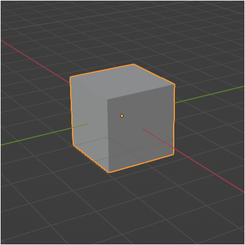

This tutorial will cover how to import static 3D models from Blender.
Note that this tutorial will be focused on Blender but it also applies to pretty much any other 3D modeling software package with some slight changes.
Start by installing Blender from the command line with just this single command:
$ sudo apt install blender
You might have to click Y a couple of times and then it will download all the files and install it.
After that you should have an icon for it in your applications and you should be able to run it.
Now in the previous tutorials we have already created our own model format and rendered 3D models using that format.
The goal now is to convert Blender models into our format and render them.
I won't go into how to model 3D objects in Blender as there are many tutorials on the net already dedicated to that, we will instead start at the point where you have a textured and triangulated 3D model ready for export.
For the Blender export format we will use the .OBJ format as it is easily readable and good for beginners to start with.
Now to export your model in this format click on "File", then "Export", and then "Wavefront (.obj) (legacy)".
Give it a file name and hit "Export OBJ" and it will export it to a text file with a .obj extension.
To look at the file you can use any text editor since it is in plain text format.
You will then see something that looks like the following:
Cube.obj
# Blender v3.4.1 OBJ File: ''
# www.blender.org
mtllib cube.mtl
o Cube
v 1.000000 1.000000 -1.000000
v 1.000000 -1.000000 -1.000000
v 1.000000 1.000000 1.000000
v 1.000000 -1.000000 1.000000
v -1.000000 1.000000 -1.000000
v -1.000000 -1.000000 -1.000000
v -1.000000 1.000000 1.000000
v -1.000000 -1.000000 1.000000
vt 1.000000 1.000000
vt 0.000000 0.000000
vt 1.000000 0.000000
vt 1.000000 1.000000
vt 0.000000 0.000000
vt 1.000000 0.000000
vt 1.000000 1.000000
vt 0.000000 0.000000
vt 1.000000 0.000000
vt 1.000000 1.000000
vt 1.000000 0.000000
vt 1.000000 1.000000
vt 0.000000 0.000000
vt 1.000000 0.000000
vt 0.000000 0.000000
vt 0.000000 1.000000
vt 0.000000 1.000000
vt 0.000000 1.000000
vt 0.000000 1.000000
vt 0.000000 1.000000
vn 0.0000 1.0000 0.0000
vn 0.0000 0.0000 1.0000
vn -1.0000 0.0000 0.0000
vn 0.0000 -1.0000 0.0000
vn 1.0000 0.0000 0.0000
vn 0.0000 0.0000 -1.0000
usemtl Material
s off
f 5/1/1 3/2/1 1/3/1
f 3/4/2 8/5/2 4/6/2
f 7/7/3 6/8/3 8/9/3
f 2/10/4 8/5/4 6/11/4
f 1/12/5 4/13/5 2/14/5
f 5/1/6 2/15/6 6/11/6
f 5/1/1 7/16/1 3/2/1
f 3/4/2 7/16/2 8/5/2
f 7/7/3 5/17/3 6/8/3
f 2/10/4 4/18/4 8/5/4
f 1/12/5 3/19/5 4/13/5
f 5/1/6 1/20/6 2/15/6
This particular .OBJ model file represents a 3D cube.
It has 8 vertices, 20 texture coordinates, and 6 normal vectors.
The cube has 6 sides made up of 12 faces in total.
When examining the file you can ignore every line unless it starts with a "V", "VT", "VN", or "F".
The extra information in the file will not be needed for converting .obj to our file format.
Let's look at what each of the important lines means:
1. The "V" lines are for the vertices.
The cube is made up of 8 vertices for the eight corners of the cube.
Each is listed in X, Y, Z float format.
2. The "VT" lines are for the texture coordinates.
The cube has 20 texture coordinates and most of them are duplicated since it records them for every vertex in every triangle in the cube model.
They are listed in TU, TV float format.
3. The "VN" lines are for the normal vectors.
The cube has 6 normal vectors, one for each side of the cube.
They are listed in NX, NY, NZ float format.
4. The "F" lines are for each triangle (face) in the cube model, there are 12 in total.
The values listed are indexes into the vertices, texture coordinates, and normal vectors.
The format of each face is:
f Vertex1/Texture1/Normal1 Vertex2/Texture2/Normal2 Vertex3/Texture3/Normal3
So, a line that says "f 3/13/5 4/14/6 5/15/7" then translates to "Vertex3/Texture13/Normal5 Vertex4/Texture14/Normal6 Vertex5/Texture15/Normal7".
Looking at the face lines in the .obj file notice that the three index groups per line make an individual triangle.
And in the case of this cube model the 12 total faces make up the 6 sides of the cube that has 2 triangles per side.
Blender coordinates to Left-hand conversion
By default, Blender does not use a left-handed coordinate system and will export the .obj file data in its own coordinate system.
To convert that data into a left-handed system you will need to follow these four steps:
1. Swap the X and Z position vertices, and then invert them.
2. Invert the V texture coordinate.
3. Swap the X and Z normals, and then invert them.
4. Convert the drawing order from counter-clockwise to clockwise. In the code I simply read in the indexes in reverse order instead of re-organizing it after the fact.
With those four steps complete the model data will be ready for OpenGL 4.0 to render correctly in a left-hand coordinate system.
Main.cpp
The program to convert the Blender .obj files into our OpenGL 4.0 format is fairly simple and is a single program file called main.cpp.
It opens a command prompt and asks for the name of the .obj file to convert.
Once the user types in the name it will attempt to open the file and read in the data counts and build the structures required to read the data into.
After that it reads the data into those structures and converts it to a left-hand system.
Once that is done it then writes the data out to a model.txt file.
That file can then be renamed and used for rendering in OpenGL 4.0 using the 3D model rendering from the previous tutorials.
////////////////////////////////////////////////////////////////////////////////
// Filename: main.cpp
////////////////////////////////////////////////////////////////////////////////
//////////////
// INCLUDES //
//////////////
#include <iostream>
#include <fstream>
using namespace std;
//////////////
// TYPEDEFS //
//////////////
typedef struct
{
float x, y, z;
}VertexType;
typedef struct
{
int vIndex1, vIndex2, vIndex3;
int tIndex1, tIndex2, tIndex3;
int nIndex1, nIndex2, nIndex3;
}FaceType;
/////////////////////////
// FUNCTION PROTOTYPES //
/////////////////////////
void GetModelFilename(char*);
bool ReadFileCounts(char*, int&, int&, int&, int&);
bool LoadDataStructures(char*, int, int, int, int);
//////////////////
// MAIN PROGRAM //
//////////////////
int main()
{
bool result;
char filename[256];
int vertexCount, textureCount, normalCount, faceCount;
char garbage;
// Read in the name of the model file.
GetModelFilename(filename);
// Read in the number of vertices, tex coords, normals, and faces so that the data structures can be initialized with the exact sizes needed.
result = ReadFileCounts(filename, vertexCount, textureCount, normalCount, faceCount);
if(!result)
{
return -1;
}
// Display the counts to the screen for information purposes.
cout << endl;
cout << "Vertices: " << vertexCount << endl;
cout << "UVs: " << textureCount << endl;
cout << "Normals: " << normalCount << endl;
cout << "Faces: " << faceCount << endl;
// Now read the data from the file into the data structures and then output it in our model format.
result = LoadDataStructures(filename, vertexCount, textureCount, normalCount, faceCount);
if(!result)
{
return -1;
}
// Notify the user the model has been converted.
cout << "\nFile has been converted." << endl;
cout << "\nDo you wish to exit (y/n)? ";
cin >> garbage;
return 0;
}
void GetModelFilename(char* filename)
{
bool done;
ifstream fin;
// Loop until we have a file name.
done = false;
while(!done)
{
// Ask the user for the filename.
cout << "Enter model filename: ";
// Read in the filename.
cin >> filename;
// Attempt to open the file.
fin.open(filename);
if(fin.good())
{
// If the file exists and there are no problems then exit since we have the file name.
done = true;
}
else
{
// If the file does not exist or there was an issue opening it then notify the user and repeat the process.
fin.clear();
cout << endl;
cout << "File " << filename << " could not be opened." << endl << endl;
}
}
return;
}
bool ReadFileCounts(char* filename, int& vertexCount, int& textureCount, int& normalCount, int& faceCount)
{
ifstream fin;
char input;
// Initialize the counts.
vertexCount = 0;
textureCount = 0;
normalCount = 0;
faceCount = 0;
// Open the file.
fin.open(filename);
// Check if it was successful in opening the file.
if(fin.fail() == true)
{
return false;
}
// Read from the file and continue to read until the end of the file is reached.
fin.get(input);
while(!fin.eof())
{
// If the line starts with 'v' then count either the vertex, the texture coordinates, or the normal vector.
if(input == 'v')
{
fin.get(input);
if(input == ' ') { vertexCount++; }
if(input == 't') { textureCount++; }
if(input == 'n') { normalCount++; }
}
// If the line starts with 'f' then increment the face count.
if(input == 'f')
{
fin.get(input);
if(input == ' ') { faceCount++; }
}
// Otherwise read in the remainder of the line.
while(input != '\n')
{
fin.get(input);
}
// Start reading the beginning of the next line.
fin.get(input);
}
// Close the file.
fin.close();
return true;
}
bool LoadDataStructures(char* filename, int vertexCount, int textureCount, int normalCount, int faceCount)
{
VertexType *vertices, *texcoords, *normals;
FaceType *faces;
ifstream fin;
int vertexIndex, texcoordIndex, normalIndex, faceIndex, vIndex, tIndex, nIndex;
char input, input2;
ofstream fout;
// Initialize the four data structures.
vertices = new VertexType[vertexCount];
texcoords = new VertexType[textureCount];
normals = new VertexType[normalCount];
faces = new FaceType[faceCount];
// Initialize the indexes.
vertexIndex = 0;
texcoordIndex = 0;
normalIndex = 0;
faceIndex = 0;
// Open the file.
fin.open(filename);
// Check if it was successful in opening the file.
if(fin.fail() == true)
{
return false;
}
// Read in the vertices, texture coordinates, and normals into the data structures.
// Important: Also convert to left hand coordinate system since Blender uses a different coordinate system.
fin.get(input);
while(!fin.eof())
{
if(input == 'v')
{
fin.get(input);
// Read in the vertices.
if(input == ' ')
{
// Convert blender to left hand system: Swap X and Z
fin >> vertices[vertexIndex].z >> vertices[vertexIndex].y >> vertices[vertexIndex].x;
// Convert blender to left hand system: Invert X and Z.
vertices[vertexIndex].x = vertices[vertexIndex].x * -1.0f;
vertices[vertexIndex].z = vertices[vertexIndex].z * -1.0f;
vertexIndex++;
}
// Read in the texture uv coordinates.
if(input == 't')
{
fin >> texcoords[texcoordIndex].x >> texcoords[texcoordIndex].y;
// Convert blender to left hand system: Invert the V texture coordinates.
texcoords[texcoordIndex].y = 1.0f - texcoords[texcoordIndex].y;
texcoordIndex++;
}
// Read in the normals.
if(input == 'n')
{
// Convert blender to left hand system: Swap X and Z
fin >> normals[normalIndex].z >> normals[normalIndex].y >> normals[normalIndex].x;
// Convert blender to left hand system: Invert X and Z.
normals[normalIndex].x = normals[normalIndex].x * -1.0f;
normals[normalIndex].z = normals[normalIndex].z * -1.0f;
normalIndex++;
}
}
// Read in the faces.
if(input == 'f')
{
fin.get(input);
if(input == ' ')
{
// Read the face data in reverse order to convert it to a left hand system from Blender's coordinate system.
fin >> faces[faceIndex].vIndex3 >> input2 >> faces[faceIndex].tIndex3 >> input2 >> faces[faceIndex].nIndex3
>> faces[faceIndex].vIndex2 >> input2 >> faces[faceIndex].tIndex2 >> input2 >> faces[faceIndex].nIndex2
>> faces[faceIndex].vIndex1 >> input2 >> faces[faceIndex].tIndex1 >> input2 >> faces[faceIndex].nIndex1;
faceIndex++;
}
}
// Read in the remainder of the line.
while(input != '\n')
{
fin.get(input);
}
// Start reading the beginning of the next line.
fin.get(input);
}
// Close the file.
fin.close();
// Open the output file.
fout.open("model.txt");
// Write out the file header that our model format uses.
fout << "Vertex Count: " << (faceCount * 3) << endl;
fout << endl;
fout << "Data:" << endl;
fout << endl;
// Now loop through all the faces and output the three vertices for each face.
for(int i=0; i<faceIndex; i++)
{
vIndex = faces[i].vIndex1 - 1;
tIndex = faces[i].tIndex1 - 1;
nIndex = faces[i].nIndex1 - 1;
fout << vertices[vIndex].x << ' ' << vertices[vIndex].y << ' ' << vertices[vIndex].z << ' '
<< texcoords[tIndex].x << ' ' << texcoords[tIndex].y << ' '
<< normals[nIndex].x << ' ' << normals[nIndex].y << ' ' << normals[nIndex].z << endl;
vIndex = faces[i].vIndex2 - 1;
tIndex = faces[i].tIndex2 - 1;
nIndex = faces[i].nIndex2 - 1;
fout << vertices[vIndex].x << ' ' << vertices[vIndex].y << ' ' << vertices[vIndex].z << ' '
<< texcoords[tIndex].x << ' ' << texcoords[tIndex].y << ' '
<< normals[nIndex].x << ' ' << normals[nIndex].y << ' ' << normals[nIndex].z << endl;
vIndex = faces[i].vIndex3 - 1;
tIndex = faces[i].tIndex3 - 1;
nIndex = faces[i].nIndex3 - 1;
fout << vertices[vIndex].x << ' ' << vertices[vIndex].y << ' ' << vertices[vIndex].z << ' '
<< texcoords[tIndex].x << ' ' << texcoords[tIndex].y << ' '
<< normals[nIndex].x << ' ' << normals[nIndex].y << ' ' << normals[nIndex].z << endl;
}
// Close the output file.
fout.close();
// Release the four data structures.
if(vertices)
{
delete [] vertices;
vertices = 0;
}
if(texcoords)
{
delete [] texcoords;
texcoords = 0;
}
if(normals)
{
delete [] normals;
normals = 0;
}
if(faces)
{
delete [] faces;
faces = 0;
}
return true;
}
Compiling
Since this is just a single cpp file you can compile and run it from the command line in the following way:
$ g++ main.cpp
$ ./a.out
Summary
We can now convert Blender .obj files into our simple model format.

To Do Exercises
1. Recompile the program and run it with the supplied cube.obj model file.
2. Use Blender to create a sphere model and export it in .obj format and run this program to convert it.
3. Convert this code to read in and export your own preferred model format.
Source Code
Source Code and Data Files: gl4linuxtut24_src.tar.gz